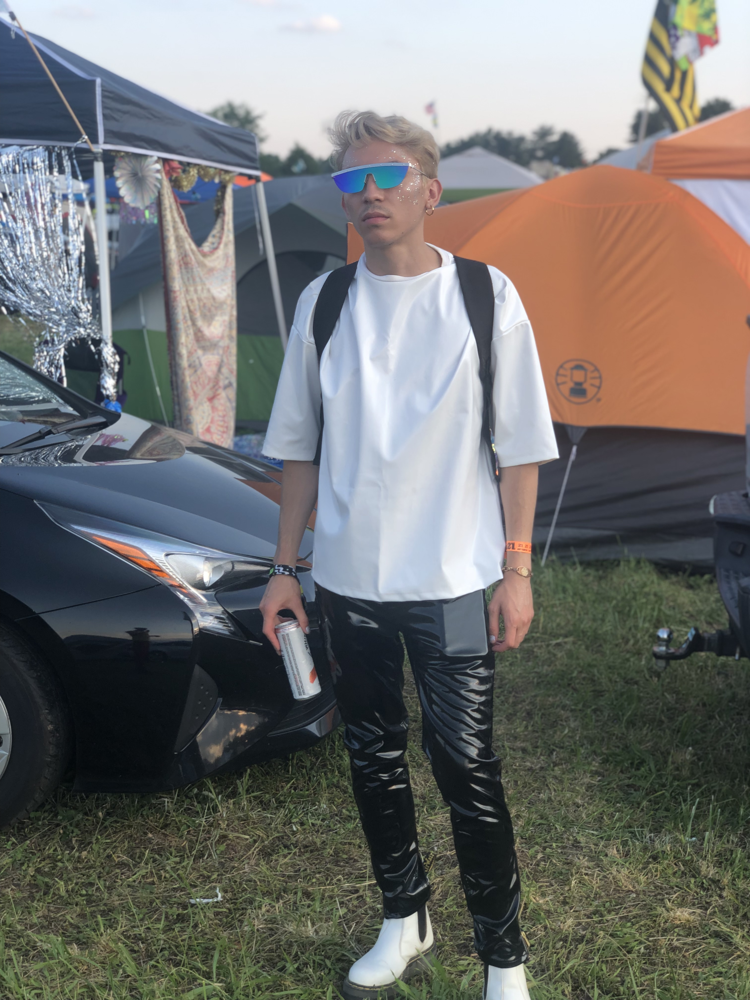

In my free time, I love traveling, techno (and all things music), dancing, fashion, cooking, eating, laughing, and coding.
I am very passionate about music. I feel that it allows artists and fans to express their creativity and emotions in ways that aren't possible through other mediums. I'm grateful to live in a city like Austin, TX that has so many opportunities to experience live music.
When it comes to personal goals, I have wanted to get into techno DJing now that I am in a new city. I have been making mixes for personal enjoyment since I was in high school, and I hope that I can set aside time to learn more traditional DJing skills, and eventually get my own gigs in the city.
My personal SoundCloud page is found here: Homotopies on SoundCloud
I enjoy going to music festivals and concerts, because it allows me to express myself through dancing :) and fashion. One of my favorite things about music events is curating a creative look to match the vibe of whatever music I am seeing.
Below are a few looks that I have served recently: